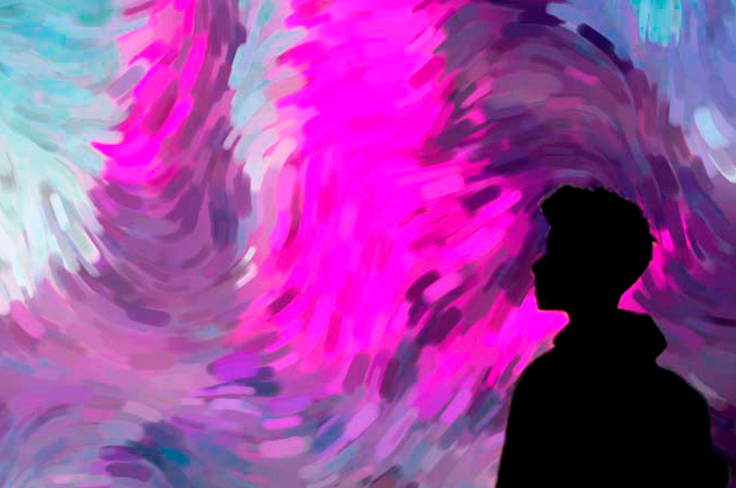
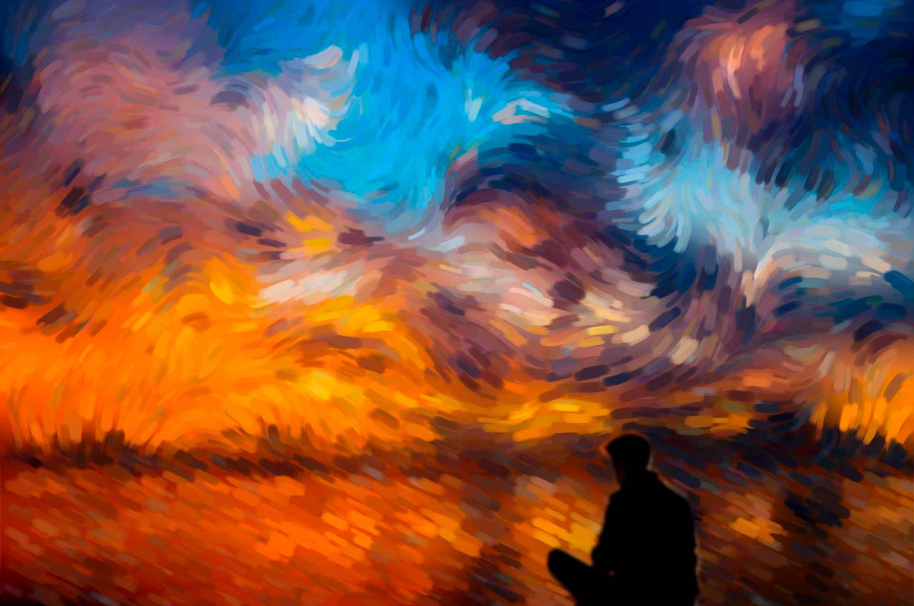
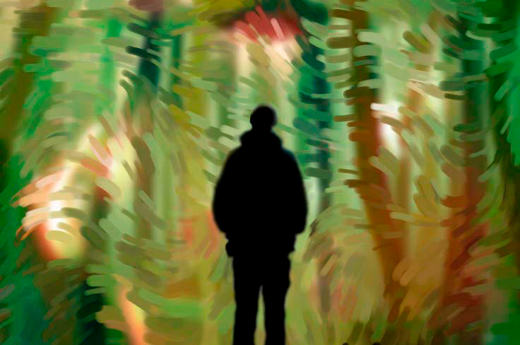
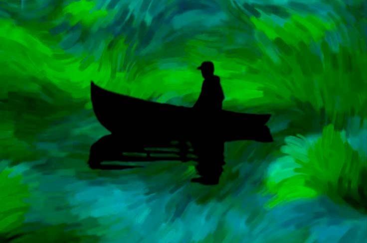
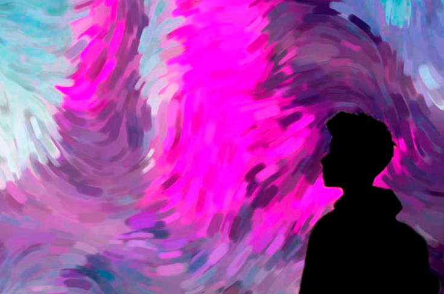
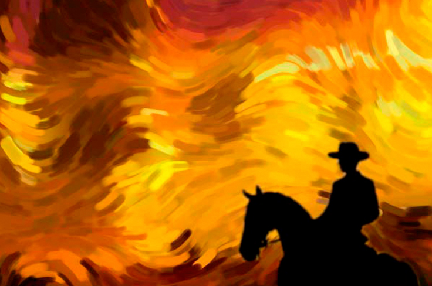
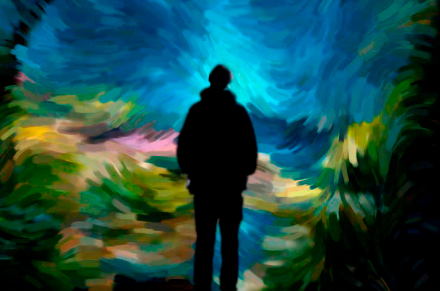

Día #45
Adentrándome en un paisaje nevado, contemplé con asombro la majestuosidad de las montañas que se alzaban imponentes frente a mí. Sus picos escarpados se perdían en las nubes, envueltos en un manto que parecía haber caído del cielo. Cada cumbre era única, con su propia silueta y personalidad, desafiando la gravedad y deslumbrando con su grandeza. Mientras mis ojos recorrían el panorama, una sensación de admiración y gratitud se apoderó de mí. Me di cuenta de la diversidad infinita que existe en nuestro mundo: desde las playas bañadas por el sol hasta los campos de flores gigantes y ahora estas montañas nevadas. Cada paisaje, cada ecosistema, nos revela la increíble capacidad de la Tierra para moldear y sustentar la vida en sus formas más variadas.
En ese momento, me di cuenta de lo afortunado que era de presenciar esta maravilla natural. La diversidad del mundo que me rodeaba me recordaba la importancia de proteger y preservar nuestro entorno, para que futuras generaciones también puedan deleitarse con la belleza y la variedad que nos ofrece.
Con renovado sentido de asombro y respeto, continúe mi camino, sabiendo que aún hay mucho por descubrir y explorar en esta vasta y diversa morada que llamamos hogar.
![ Día #34 Tengo muy presente aquel momento, la brisa cálida del océano acariciaba mi rostro mientras me acomodaba en la suave arena de la playa. El horizonte se tiñó de tonos azules y naranjas, envolviéndome en una calidez serena. El sonido suave de las olas rompiendo en la costa se mezclaba con el susurro de mis pensamientos, creando una sinfonía íntima en mi mente. En ese momento, todo pareció detenerse, y me sumergí en la paz que emanaba de la naturaleza. La grandiosidad del sol desvaneciéndose en el mar me llenó de una profunda gratitud y asombro, recordándome la fugacidad de la vida y la belleza efímera que nos rodea. En esa orilla, en ese instante, encontré la tranquilidad y la conexión con algo más grande que yo, dejando que la melancolía y la esperanza se entrelazasen en mi alma.](Img/Resultado1.jpg){kind=link}
![ Día #39 Caminando ese día sin rumbo alguno me tope con un paisaje surrealista de bellas flores gigantes. Sus pétalos enormes se extendían hacia el cielo, como si fueran cúpulas vibrantes y coloridas. Cada flor emanaba un aroma embriagador, envolviéndome en un abrazo fragante mientras exploraba el entorno. Sus colores deslumbrantes pintaban el horizonte, creando un espectáculo que desafiaba cualquier descripción verbal. Me perdí entre los senderos de este jardín prodigioso, maravillado por la magnificencia y la exuberancia de la naturaleza. El sol brillaba con una luz dorada, iluminando las flores y creando destellos mágicos que danzaban a mi alrededor. En aquel momento, me sentí transportado a un mundo de ensueño, donde la fantasía y la realidad se entrelazaban en perfecta armonía. Y aunque el tiempo ha pasado desde aquel encuentro, el recuerdo de aquellas flores gigantes siempre permanecerá en mi corazón como un tesoro inolvidable.](Img/Resultado2.jpg){kind=link}
![ Día #42 Ese día, navegando en un pequeño bote, me adentré en un campo de lirios gigantes. Sus tallos se alzaban majestuosos desde el agua, emergiendo como pilares verdes que sostenían las inmensas hojas flotantes. Los pétalos de los lirios, del tamaño de tesoros botánicos, desplegaban una paleta de colores deslumbrantes: blancos luminosos, rosas suaves y violetas profundos. Cada lirio parecía ser una obra maestra en sí misma, un tributo a la belleza y la perfección de la naturaleza. Contemplar aquel espectáculo de lirios gigantes me hacía sentir pequeño y humilde ante la grandeza de la naturaleza. Era un recordatorio de la capacidad infinita que tiene el mundo natural para sorprendernos y maravillarnos. Cada instante en aquel campo de lirios era un regalo precioso, un viaje inolvidable a un mundo de ensueño donde la belleza florecía en dimensiones insospechadas.](Img/Resultado4.jpg){kind=link}
![ Día #45 Adentrándome en un paisaje nevado, contemplé con asombro la majestuosidad de las montañas que se alzaban imponentes frente a mí. Sus picos escarpados se perdían en las nubes, envueltos en un manto que parecía haber caído del cielo. Cada cumbre era única, con su propia silueta y personalidad, desafiando la gravedad y deslumbrando con su grandeza. Mientras mis ojos recorrían el panorama, una sensación de admiración y gratitud se apoderó de mí. Me di cuenta de la diversidad infinita que existe en nuestro mundo: desde las playas bañadas por el sol hasta los campos de flores gigantes y ahora estas montañas nevadas. Cada paisaje, cada ecosistema, nos revela la increíble capacidad de la Tierra para moldear y sustentar la vida en sus formas más variadas. En ese momento, me di cuenta de lo afortunado que era de presenciar esta maravilla natural. La diversidad del mundo que me rodeaba me recordaba la importancia de proteger y preservar nuestro entorno, para que futuras generaciones también puedan deleitarse con la belleza y la variedad que nos ofrece. Con renovado sentido de asombro y respeto, continúe mi camino, sabiendo que aún hay mucho por descubrir y explorar en esta vasta y diversa morada que llamamos hogar.](Img/Resultado6.jpg){kind=link}
![ Día #50 Montado en un caballo, avanzaba por un desierto implacable, sintiendo el agotamiento en cada músculo de mi cuerpo. El sol abrasador parecía desafiar mi determinación, pero a medida que nos acercábamos a nuestro destino final, un fuego interno se encendía dentro de mí. Las dunas se extendían sin fin, ondulando en su eterna quietud. La arena dorada se elevaba y caía bajo las patas del caballo, susurrando historias ancestrales al viento. A pesar del cansancio, cada paso hacia adelante era una prueba de resistencia y perseverancia. A medida que nos acercábamos, el horizonte se desdibujaba, y un oasis de esperanza se vislumbraba en la distancia. La promesa de un respiro merecido se volvía cada vez más tangible. El viento caliente se transformaba en una brisa refrescante que acariciaba mi rostro, como un aliento de aliento en medio del desierto abrasador.](Img/Resultado5.jpg){kind=link}
![ Día #51 Al llegar a mi destino, mis ojos se llenaron de asombro y éxtasis al contemplar la cascada prometida frente a mí. Un rugido ensordecedor acompañaba el espectáculo acuático, que caía desde lo alto con una fuerza y belleza indescriptibles. Me sumergí en el momento, dejando que la grandeza de la cascada y la calma del entorno se fusionaran en mi ser. Cerré los ojos y escuché el latido de la naturaleza, sintiéndome en perfecta armonía con el flujo eterno de la vida. En ese instante, comprendí el poder curativo de la naturaleza y el regalo que había sido llegar hasta aquí. Con el corazón lleno de gratitud y una sensación de plenitud, me prometí a mí mismo llevar este recuerdo conmigo siempre, como una fuente de inspiración y conexión con la esencia misma de la vida. Ahora finalmente puedo decir que con este logro, me permito descansar y recargar mi espíritu para enfrentar los desafíos futuros con renovada fuerza y sabiduría adquirida en mi travesía.](Img/Resultado3.jpg){kind=link}